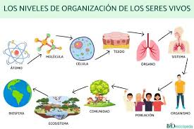

Niveles de organización que relacionan a los seres vivos con la sistemática
OBJETIVO:
- Identificar y comprender los niveles de organización biológica de los seres vivos desde el individuo hasta la biósfera, para reconocer como la sistemática permite clasificar y relacionar los organismos con su entorno e estudiantes de octavo grado.
TIEMPO SUGERIDO:
- El tiempo sugerido de este subtema es de 45 minutos a 1 hora.
INFOGRAFÍA
